傾聽與評估
3 分鐘健康生活評估＋顧問一對一了解你的睡眠、飲食、壓力與作息。
從清理、營養、平衡出發，用更精準的方式看待睡眠、代謝、腸胃與日常狀態。我們不賣產品——我們陪你找到適合的解決方案。
「我們不賣產品，
我們陪你找到適合的解決方案」
每個人的身體失衡原因都不一樣。星寶先聽你說，再從 10 大日常保養方向中找出最適合你的組合，並由顧問陪你一起走下去。
3 分鐘健康生活評估＋顧問一對一了解你的睡眠、飲食、壓力與作息。
依「清理・營養・平衡」邏輯，從 10 大方向搭配草本與專利配方，而不是一罐通吃。
顧問定期關心你的感受與生活習慣，依變化調整方案，陪你回到更好的節奏。
點選方向，查看對應的星寶日常保養配方。
每款產品都列出亮點特色、專利原料與特色重點。點「了解更多」看完整成分與食用建議。
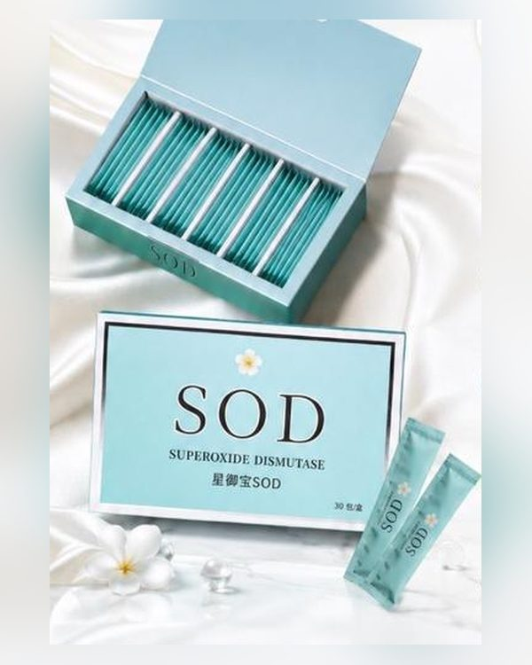
抗氧化・青春活力日常保養｜抗氧化支持｜煥神采
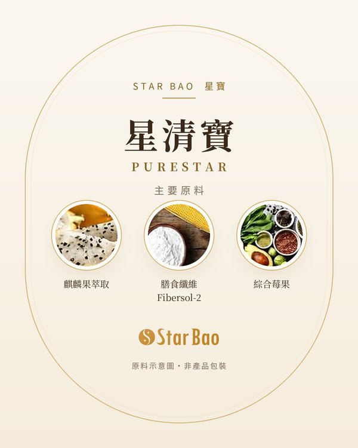
腸胃清理調理腸胃｜體質保養｜舒暢好幫手
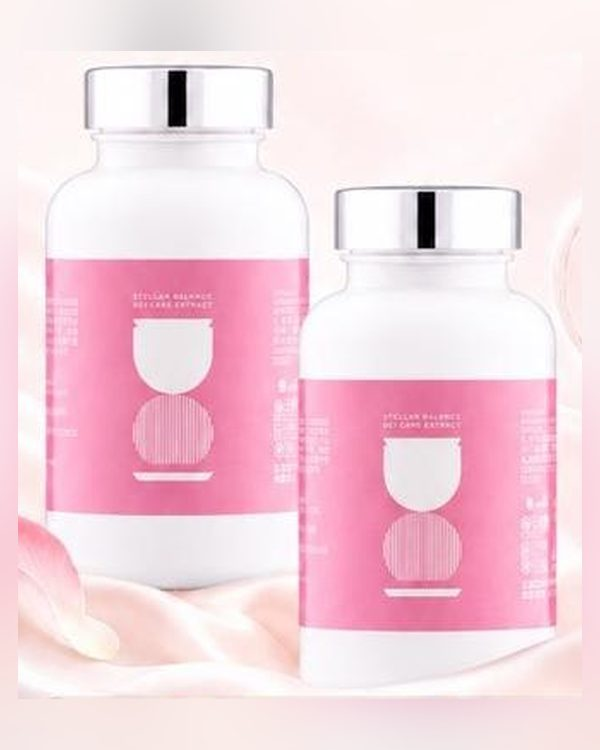
男女體質守護兩性體質｜男女皆宜
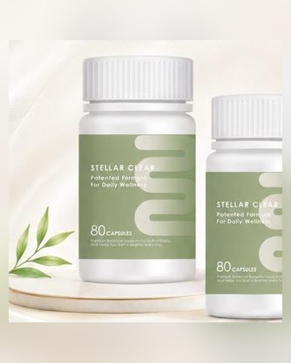
水分・輕盈調理水分｜維持輕盈｜順暢機能
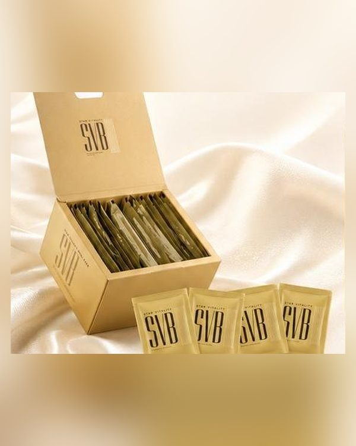
代謝・體態調控代謝｜維持活力｜輕盈好幫手
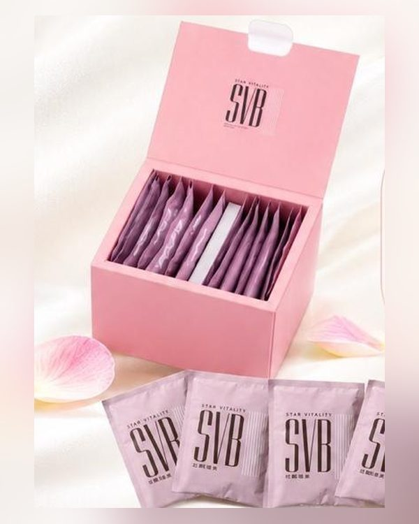
代謝・體態調控飲食｜維持代謝｜輕盈好幫手
濃醇可可｜控食飽足｜體態管理
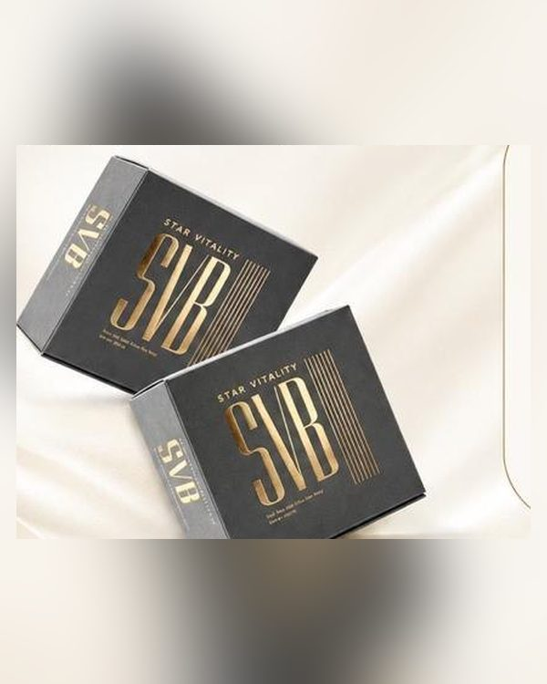
代謝・體態芝香滋養｜植物提速｜元護腸道
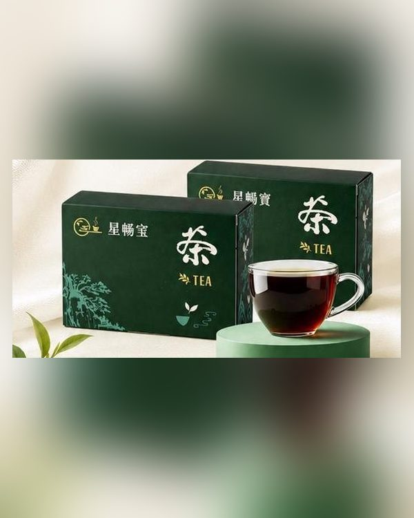
甜食族保養調理代謝｜添活力｜隨身好安心
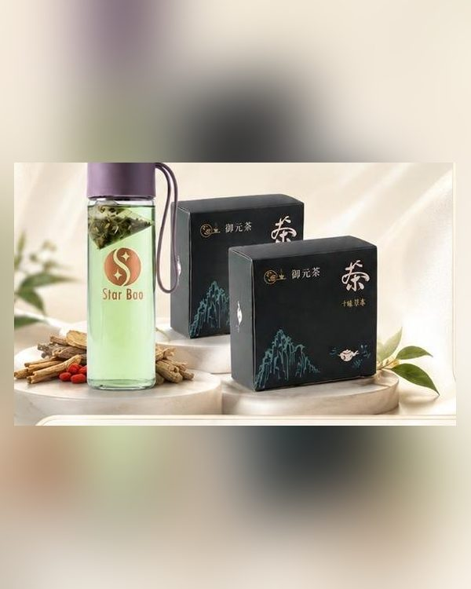
元氣・精神補元氣｜潤氣色｜調理循環
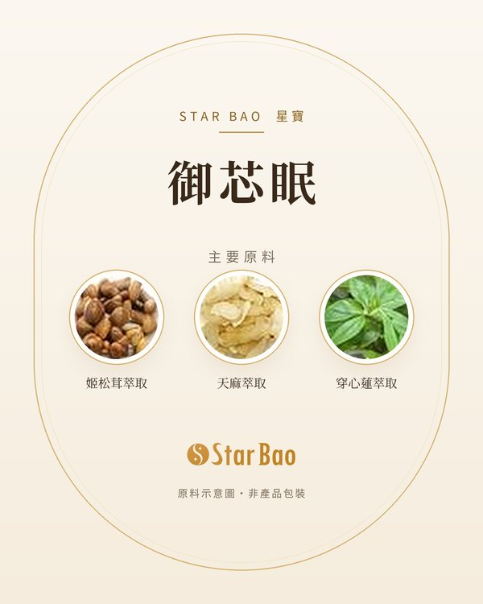
睡眠舒壓調整體質｜夜間放鬆保養
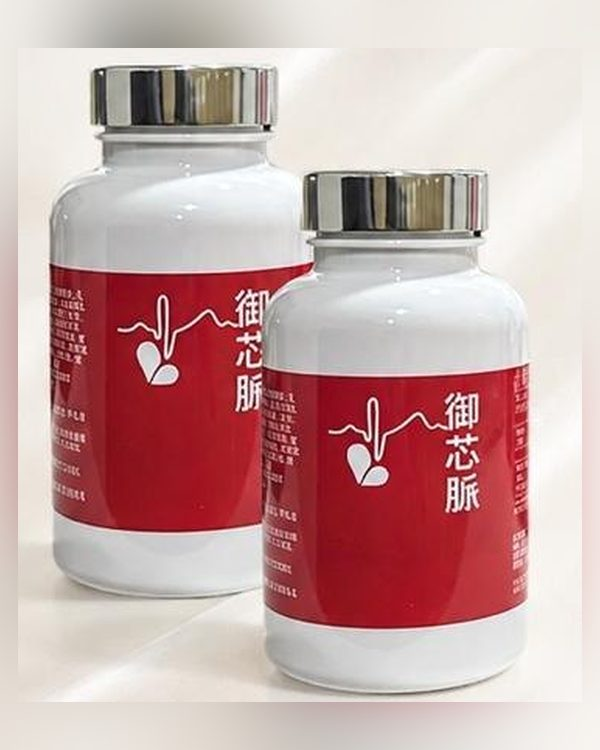
循環保養三重營養｜守護健康節奏
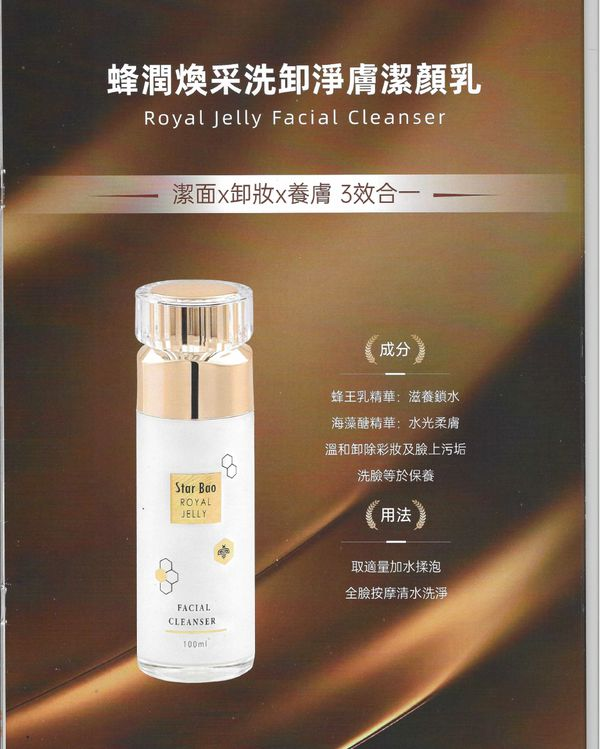
肌膚保養潔面 × 卸妝 × 養膚 三效合一
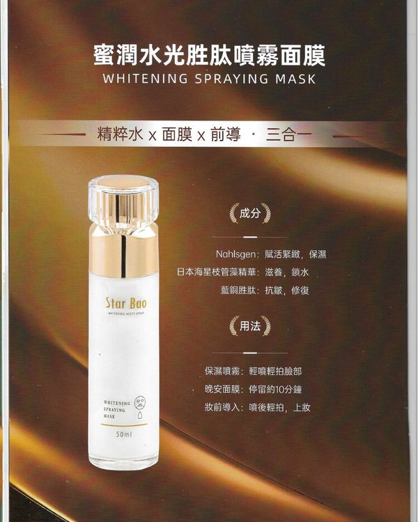
肌膚保養精粹水 × 面膜 × 前導 三合一
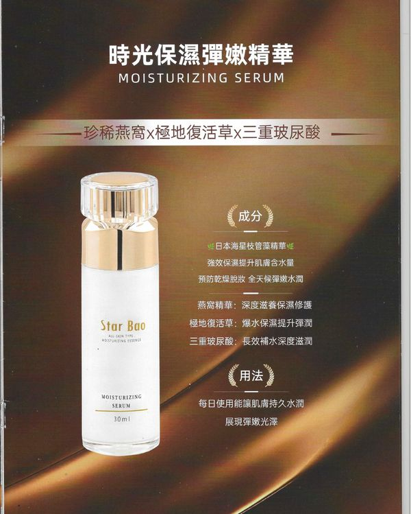
肌膚保養珍稀燕窩 × 極地復活草 × 三重玻尿酸
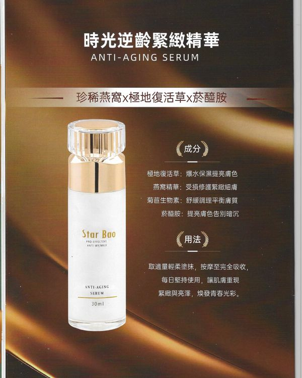
肌膚保養珍稀燕窩 × 極地復活草 × 菸醯胺
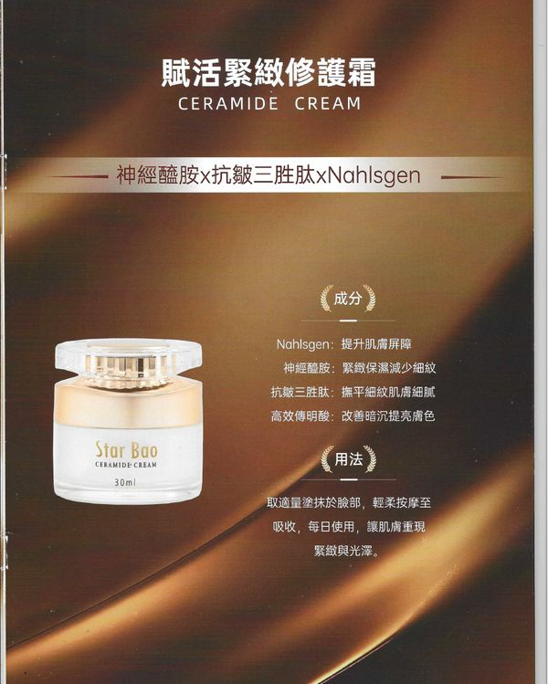
肌膚保養神經醯胺 × 抗皺三胜肽 × Nahlsgen®
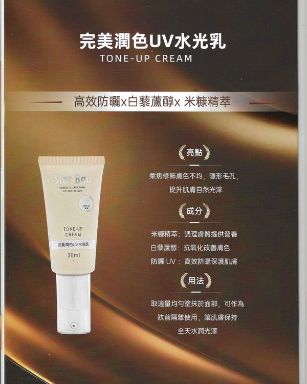
肌膚保養高效防曬 × 白藜蘆醇 × 米糠精萃
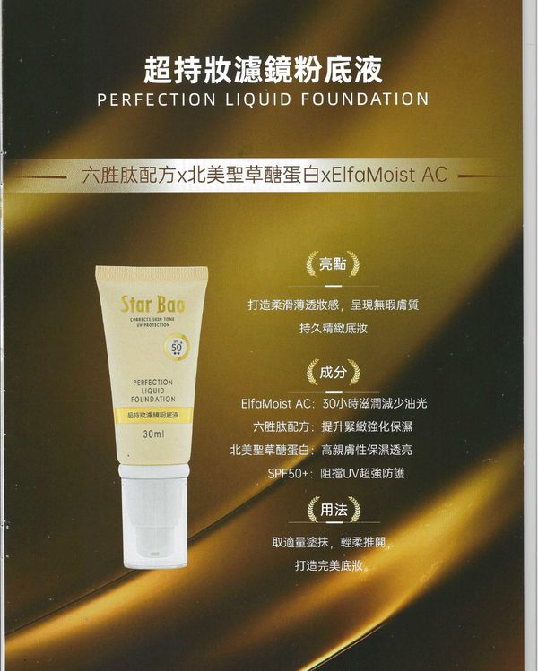
肌膚保養六胜肽配方 × 北美聖草糖蛋白 × ElfaMoist AC
※ 營養系列為食品級營養補充食品（機能食品），並非藥物；實際感受因人而異，請搭配均衡飲食與規律作息。時光駐顏系列為化妝品。
草本 × 專利 × 第三方檢驗：配方採用國際原料供應商的專利原料，部分產品附第三方檢驗報告。
各配方採用來源資料中標示的專利原料，例如 GliSODin®、Oligonol® 荔枝綠茶多酚、Unique IS-2、UltraChrome®、Fibersol-2、ElimReal®、Cartinea®、專利 GABA、NK33×NK98、LPLDL®、血橙萃取 ROC、日本專利芝麻萃取。
配方依「清理・營養・平衡」三步日常保養邏輯設計，由顧問依您的生活習慣搭配。
部分產品附第三方檢驗報告（如 SGS、台美檢驗科技），可向您的專屬顧問索取。
配方依原料供應商提供的研究資料設計；專家合作資訊將於取得書面授權後再公布。
專利與檢驗資訊依品牌提供之產品資料整理。食品級營養補充食品並非藥物，不具診斷、治療或預防疾病之功效。
勾選最近的生活狀況，我們會整理出你可以優先保養的方向，並由顧問透過 WhatsApp 為你說明。
星寶 Star Bao 是在馬來西亞推廣的日常保養解決方案品牌，提供食品級營養補充食品（機能食品）與時光駐顏系列肌膚保養品。我們不單賣產品，而是先了解您的睡眠、飲食、壓力與作息，再從 10 大日常保養方向中搭配合適的組合，並由顧問持續跟進。
不是。星寶營養系列為食品級營養補充食品（機能食品），肌膚系列為化妝品，皆非藥物，不具診斷、治療、治癒或預防任何疾病的功效，也不能取代醫師治療或藥物。實際感受因人而異，請搭配均衡飲食與規律作息。
請依包裝標示食用，多數產品為每日 1 份。星暢寶與御元茶每日 1 包，以約 250ml 冷水或熱水沖泡；星清寶每日 1 包；御芯眠建議睡前食用；星盈寶 SVB 依包裝沖泡飲用。請勿自行加量，多食無益。
沒有固定時間，實際感受因人而異。食品級營養補充食品是日常保養，不是藥物，建議依包裝指示規律食用，並搭配均衡飲食、充足睡眠與適量運動；顧問會定期關心您的狀況。如身體不適持續，請先就醫。
請先諮詢醫師，取得同意後再食用。懷孕、備孕或哺乳期間的營養需求較特殊，星寶每款營養補充食品的注意事項都建議此族群先諮詢醫師；星緻衡 DCI、御芯脈等產品尤其需要醫師確認。
請先詢問您的醫師或藥劑師。正在服用處方藥（例如抗凝血、降血脂、安眠或荷爾蒙相關藥物）者，部分草本與發酵成分需要醫療專業人員評估；請勿自行停藥，也不要以營養補充食品取代藥物。
請先諮詢您的醫師再決定。已確診慢性疾病（包括糖尿病、腎臟或肝臟疾病）者，應先取得醫師同意並持續遵照醫囑；營養補充食品不能取代治療，也請勿自行停藥。
個別反應因人而異，請依建議份量食用；如食用後感到不適，請立即停用並諮詢醫師。食用前請先查看成分表，例如對芝麻過敏者不宜食用星盈寶 SVB 美力金芝麻。
未滿 18 歲請先諮詢醫師，不建議自行給孩子食用。星盈寶 SVB 等產品的注意事項也標示未成年人應先諮詢醫師。
不是醫療診斷。它是「健康生活評估」，根據您勾選的生活狀況找出可以優先保養的方向，結果僅供參考。如出現胸痛、血尿、不明原因體重下降等警訊，系統會提醒您盡快就醫。
可參考「睡眠舒壓」方向的御芯眠（建議睡前食用），含專利 GABA、專利乳酸菌複合株 NK33×NK98 與專利芝麻萃取，適合想在夜間放鬆、舒緩日常壓力感的人。正在服用安眠、抗焦慮或抗憂鬱藥物者，請先諮詢醫師；長期睡不好請尋求醫師協助。
四種口味的配方重點不同：鐵觀音含專利藤黃果萃取與專利含鉻果寡糖，適合體態管理期間的日常補充；超莓果含專利白腎豆萃取與專利含鉻果寡糖，適合愛吃澱粉、甜食並想調整飲食的人；極纖黑可可富含膳食纖維，增加飽足感；美力金芝麻添加鳳梨、木瓜等酵素，適合大餐後想要輕鬆感的人。
有，多款配方採用標示專利的原料，例如 GliSODin®、Oligonol® 荔枝綠茶多酚、UltraChrome®、ElimReal®、Cartinea®、專利 GABA 等；部分產品附第三方檢驗報告，可向顧問索取。各產品的專利資訊列於產品介紹中，來源未載明者標示「資料待補」。
價格依產品配套與當期優惠而定，請以顧問提供的正式報價單為準。請透過 WhatsApp 010-927 9131 聯絡我們，顧問會依您的需求準備報價。
透過 WhatsApp 010-927 9131 聯絡我們即可申請。我們提供代理、經銷商、經理三個層級，附完整產品培訓、合規話術、專屬推薦連結與佣金制度，並有系統協助管理客戶與跟進。
您的資料僅用於提供日常保養建議與聯絡跟進，我們依照馬來西亞《2010 年個人資料保護法令》（PDPA）處理個人資料。您可以隨時透過 WhatsApp 要求查詢、更正或刪除您的資料。
WhatsApp 我們的顧問，一對一了解你的狀況與適合的日常保養方向。